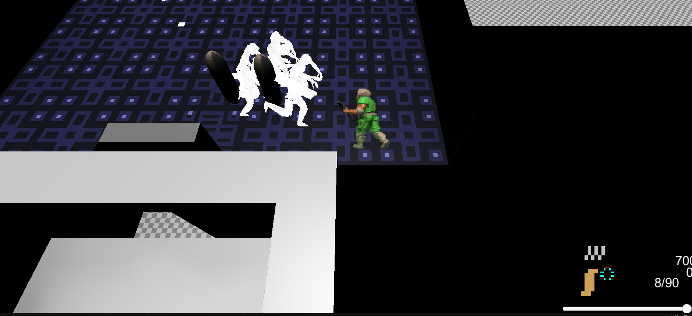
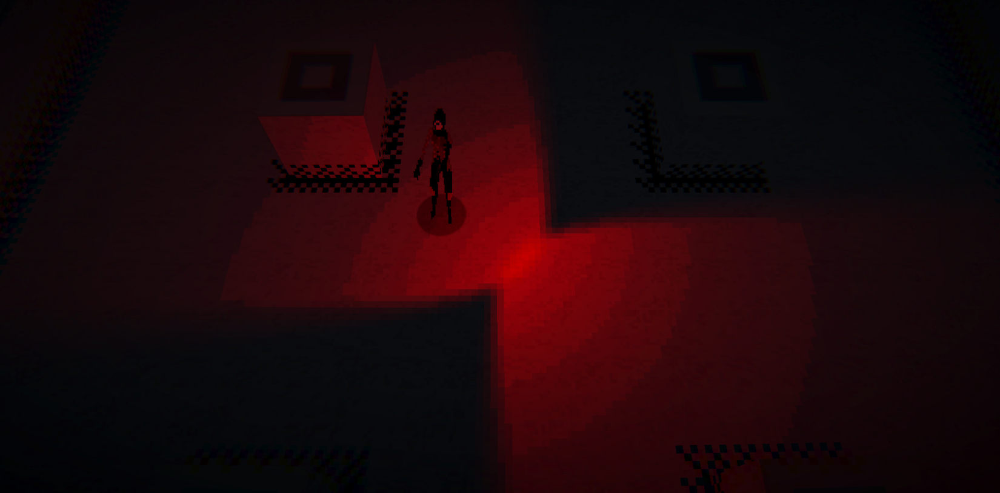

Gameplay(Part 2)

What's up on the agenda today?
Well the first thing I did was to test out a idea I have, offset when walking. I wanted to have a system like the Killing floor games where the animation offsets your aiming and you're able to have accurate hipfire from walking. It wasn't too hard to add and it instantly gave me neuron activation. It added a nice risk reward where standing still makes you weak, especially to the fire of special enemies
I also added basic melee, in fact I've done so much that I think i'll just make a quick list
Refactored rooms to be singletons, added grabbing to zombies, which created a long back and forth between getting the melee right. Entire days on pixelated lighting, also been working on music so I've been testing metronomes and music for each enviroment, Animation for zombies to add feedback for melee, Final boss that as each stage be a floor, Actively refactoring bullets to allow going through multiple enemies and to be separated from the server and it's broken, UI refactoring to fix world space jitter bug, Characters actually matter and have stat differences between them, weapons are unlocked as you buy them, you can heal
Right with everything in place, I can do a few choice sections. First being artstyle, I was following a godot shader tutorial, I was having trouble a bit and gave up. Came back and realized I forgot a matrice, once I got thing's set up and fix a few issues, I got pixelated lighting and eventually ambient occlusion. I got everything where I like it, I just need to add it to the game and clean up the shader

I've been experimenting with music making, I even took part in a game jam. I needed a small thing todo on the weekends so i've been experimenting with dynamic music, the main thing is that I wanted a exploration theme, a shop theme, and to transition between the two. Later on I might add stuff for battle starts
I have pretty much every feature impledimented, I would do more design but it's hard when there are so many code issues. So the next few months will be refactoring, UI refactoring, graphics, animation, etc. Next few months will be full assing everything i've added. Happy half year of full development!